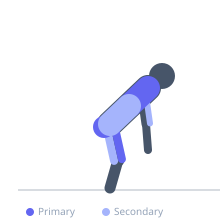
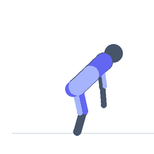

Exercise guide / Rowing Machine Intervals — Ergometer
Rowing Machine Intervals — Ergometer
Rowing machine intervals on an ergometer produce one of the highest whole-body cardiovascular demands available in a gym setting, engaging approximately 86% of skeletal muscle mass in each stroke. Each rowing stroke follows a sequence of leg drive, body swing, and arm pull, distributing load across the quadriceps, gluteus maximus, latissimus dorsi, rhomboids, and biceps simultaneously. The absence of eccentric ground-reaction forces makes the rower extremely joint-friendly while generating a metabolic demand comparable to running sprints.
Primary muscles
vastus lateralis
gluteus maximus
latissimus dorsi
rhomboid major
Secondary muscles
biceps brachii long head
biceps femoris long head
erector spinae
trapezius middle
Stabilizers
transverse abdominis
internal oblique
Equipment


Starting position
- Sit on the seat with feet strapped securely in the footrests. Grip the handle with an overhand grip, arms extended, shins vertical, and body hinged slightly forward with a neutral spine (the 'catch' position).
Setup
- Set the damper (resistance lever) to 4–6 for most training. Higher damper settings feel heavier but are not necessarily better — elite rowers often train at 3–5. Connect the performance monitor and set the target for distance or time.
Steps
- Step 1: Begin at the catch — shins vertical, arms straight, body leaning slightly forward with a flat back.
- Step 2: Drive: push through both legs forcefully, keeping the arms straight until the legs are nearly extended.
- Step 3: Swing: once the legs are 90% extended, swing the torso back to 1 o'clock (slightly past vertical) using the hips.
- Step 4: Pull: once the body is swung back, draw the handle into the lower sternum by bending the elbows and pulling the shoulder blades together.
- Step 5: Recover: extend the arms first, then hinge the torso forward, then bend the knees and slide forward to the catch. Maintain a 2:1 recovery-to-drive ratio in time.
Coaching cues
- Legs, body, arms — arms, body, legs. That is the entire stroke
- Push the foot plate away, do not pull the handle
- Hang your body weight off the handle at the catch
Breathing
- Exhale sharply at the beginning of the drive phase. Inhale on the recovery as you slide forward. Maintain a consistent breathing rhythm matched to the stroke rate.
Range of motion
- Full leg drive from a compressed position to nearly locked-out. Handle should travel from full arm extension to touching the sternum just below the pectoral muscles.
Tempo
- Interval option: 500m hard / 2 minutes easy × 6–8 rounds. Tabata option: 20 seconds maximum effort / 10 seconds rest × 8. Stroke rate during sprint: 28–34 SPM.
Common mistakes
- Pulling with the arms before the legs have driven — the sequence must always be legs, body, arms
- Rounding the lower back at the catch, which places the spine under shear load
- Jerking the handle rather than maintaining a smooth, connected drive
Safety
- Establish proper technique at a moderate intensity before attempting sprint intervals
- Avoid excessive layback past 1 o'clock, which compresses the lumbar spine under load
Training
- endurance: 6–8 reps
- endurance: 1–1 sets
- Rest: {'endurance': 120}